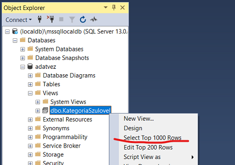

Feladat 1: Kategória nézet és adatbeszúrás¶
A feladat megoldásával 8 pont szerezhető.
Nézet létrehozása¶
Hozz létre egy nézetet CategoryWithParent néven a Category tábla kényelmesebb használatához. A nézetben két oszlop legyen: a kategória megnevezése (Name), és a szülőkategória (ParentCategoryId) megnevezése - amennyiben létezik, vagy null.
Nyiss egy új Query ablakot. Ügyelj rá, hogy a jó adatbázis legyen kiválasztva. Hozd létre a nézetet az alábbi utasítás lefuttatásával.
create view CategoryWithParent
as
select c.Name CategoryName, p.Name ParentCategoryName
from Category c
left outer join Category p on c.ParentCategoryId = p.ID
Próbáld ki a nézetet: kérdezd le a nézet tartalmát!

Beszúrás a nézeten keresztül¶
Készíts triggert InsertCategoryWithParent néven, ami lehetővé teszi új kategória beszúrását az előbb létrehozott nézeten keresztül (tehát a kategória nevét és opcionálisan a szülőkategória nevét megadva). A szülő kategória megadása nem kötelező, de amennyiben meg van adva a neve és ilyen névvel nem létezik rekord, dobj hibát, és ne vedd fel az adatot a táblába.
A megoldásban egy instead of típusú triggerre lesz szükségünk, mert ez ad lehetőséget a nézeten keresztül történő adatbeszúrásra. A trigger vázát láthatod alább.
create trigger InsertCategoryWithParent -- name of the trigger
on CategoryWithParent -- name of the view
instead of insert -- trigger code executed insted of insert
as
begin
declare @newname nvarchar(255) -- variables used below
declare @parentname nvarchar(255)
-- using a cursor to navigate the inserted table
declare ic cursor for select * from inserted
open ic
-- standard way of managing a cursor
fetch next from ic into @newname, @parentname
while @@FETCH_STATUS = 0
begin
-- check the received values available in the variables
-- find the id of the parent, if specified
-- throw error if anything is not right
-- or insert the record into the Category table
fetch next from ic into @newname, @parentname
end
close ic -- finish cursor usage
deallocate ic
end
-
Egészítsd ki a trigger vázat a ciklusban.
-
Ha érkezik szülő kategória név, ellenőrizd, hogy létezik-e kategória olyan névvel, mint ami a
@parentnameváltozóban van. -
Ha nincs ilyen, akkor dobj hibát, amivel leáll a trigger futása.
-
Ha minden rendben van, akkor szúrd be az új adatokat a
Categorytáblába (ne a nézetbe, hiszen a nézet nem írható, pont ezért készül a trigger).
BEADANDÓ
A trigger kódját az
f1-trigger.sqlfájlba írd. A fájlban csak ez az egyetlencreate triggerutasítás legyen! Semmiképpen se legyen[use], segoutasítás a fájlban! A helyes megoldás 4 pontot ér. -
-
Próbáld ki, jól működik-e a trigger! Írj egy olyan beszúró utasítást, amely sikeresen felvesz egy új elemet, és egy olyan teszt utasítást, amely során nem sikerül a beszúrás.
A helyes és helytelen viselkedéshez feltételezheted, hogy az adatbázis a kiinduló állapotban van: olyan kategória rekordok léteznek csupán, amelyeket a létrehozó script beszúrt. A két teszt ne épüljön egymásra! Mindkettő az elvárt eredményt adja attól függetlenül, hogy a másik lefutott-e már!
Ékezet kerülendő
Érdemes olyan teszt adatokat választani, amiben nincs ékezet! Különben problémákat okozhat az sql fájl kódolásának helytelen beállítása. Hogy ezt elkerüljük, használható például a LEGO, mint létező szülő kategória név.
BEADANDÓ
A teszt utasításokat az
f1-ok.sqlésf1-error.sqlfájlokba írd. Mindkét fájlban csak egyetleninsertutasítás legyen! Semmiképpen ne legyen[use], segoutasítás bennük! Mindkét utasítás 2-2 pontot ér.